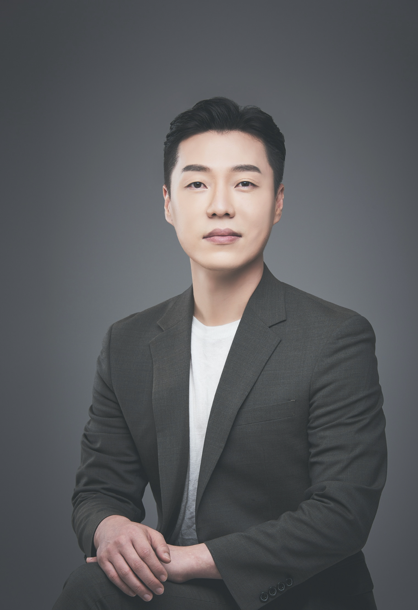

대치 입시컨설턴트 21년 / 교육회사 운영 12년 / 수학학원 운영 20년
학원장, 수학강사 교육 10년 / 연세대 교육학 석사과정
대치동 입시전문가
i.Study Director
이시용

교육회사 이력
- 전) 대교 에듀피아 강사아카데미 교수
- 전) 에이블 에듀케이션 부대표
- 전) 에이블 에듀테크 이사
- 전) 아이작 교육그룹 이사
- 현) 드림런 교육 대표이사
- 현) 아이스터디 대표
학원 운영 이력
- 전) 송파 페르마 원장
- 전) 대치 수학의 눈 원장
- 전) 대치 매쓰랭귀지 원장
- 전) 대치 에이블 수학 학원 원장
- 전) 대치 아이작 본원 원장
- 현) 대치 넥스트닥 원장
저서 및 제작 컨텐츠
- 초,중등위한 학습 전략서 [ 특별한 교육 ]
- 학교를 배우다. [ 중학교 분석 자료집 ]
- 수학 전략서 [ 대외비 수와식 12종 ]
- 수학 전략서 [ 대외비 방부함 10종 ]
- 수학 등급 만들기 [ 대외비 실전기출 12종 ]
- 수능사고력 연산 과정 [ CP 12종 ]
- 수능사고력 등급만들기 과정 [ AP 18종 ]
- 수학개별맞춤 프로그램 [ 에이블 ACL ]
- 비교과 영재교육 프로그램 [ 수리과학부 ]
- 학습이력 점검 자동화 앱 [ 대외비 APP ]
- 등급 환산 및 분석 프로그램 [ 시크릿 정보 공개 ]
- IPT 수능사고력 진단검사 프로그램
기타이력
- 최근 10년간 학원장 교육 약 300회
- 최근 16년간 학부모 설명회 약 500회
- 최근 21년간 학부모 입시 컨설팅 약 2000회